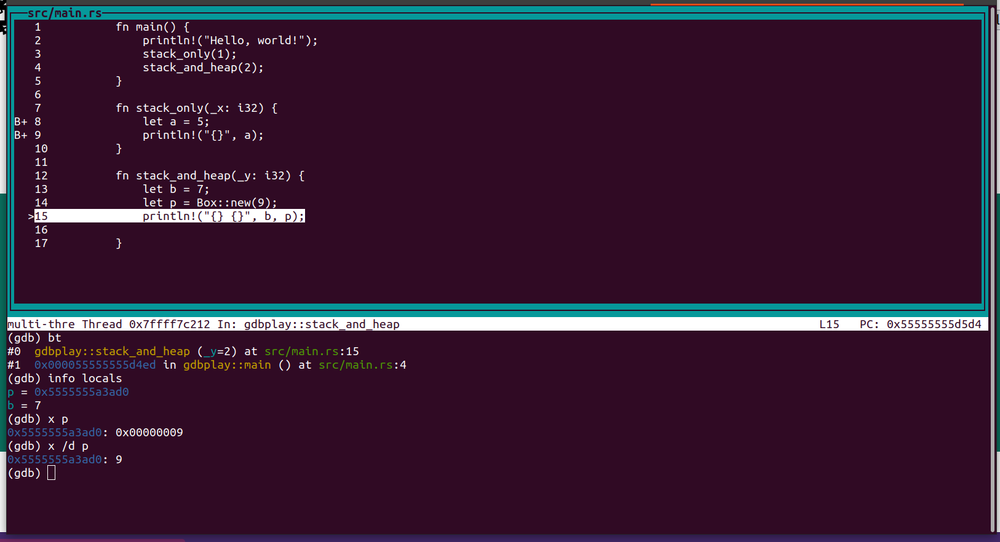

Dùng Rust viết ví dụ để học gdb.
gdb là gì
$ whatis gdb
gdb (1) - The GNU Debugger
GDB là 1 debugger trên dòng lệnh, mặc dù ít biết tới nhưng nó có cả giao diện TUI - giống như đồ họa trên text. gdb là debugger lừng danh luôn dùng để debug code C. Ngoài C, gdb hỗ trợ nhiều ngôn ngữ bao gồm cả Rust/Go...
What Languages does GDB Support?
GDB supports the following languages (in alphabetical order):
Ada
Assembly
C
C++
D
Fortran
Go
Objective-C
OpenCL
Modula-2
Pascal
Rust
gdb hỗ trợ các ngôn ngữ compile thành binary, còn Python có sẵn pdb cũng
tương tự.
Cài gdb trên Ubuntu 20.04
$ sudo apt install -y gdb
Cài Rust trên Ubuntu 20.04
$ curl --proto '=https' --tlsv1.2 -sSf https://sh.rustup.rs | sh
theo https://www.rust-lang.org/tools/install
Tạo chương trình Rust đơn giản với stack và heap
Tạo project mới:
$ cargo new gdbplay
Created binary (application) `gdbplay` package
Sửa nội dung file gdbplay/src/main.rs như sau:
fn main() {
println!("Hello, world!");
stack_only(1);
stack_and_heap(2);
}
fn stack_only(_x: i32) {
let a = 5;
println!("{}", a);
}
fn stack_and_heap(_y: i32) {
let b = 7;
let p = Box::new(9);
println!("{} {}", b, p);
}
Debug rust với gdb
Các câu lệnh cơ bản của gdb trong bài:
list: in source code ra màn hìnhb N: đặt breakpoint tại dòng N, debugger sẽ dừng lại khi chạy tới dòng Nstart: bắt đầu chạy chương trìnhs: step into - chui vào functionc: continue - chạy tới breakpoint tiếp theo.n: next - chạy tới dòng tiếp theobt: hiển thị backtrace - tất cả các "stackframe"info locals: in ra các biến localinfo args: in ra các argument của function hiện tại.
Gõ help all để xem các câu lệnh khác.
Các câu lệnh gõ vào ở dòng bắt đầu với (gdb)
$ cargo build
Compiling gdbplay v0.1.0 (/home/hvn/me/familug.github.io/content/gdbplay)
Finished dev [unoptimized + debuginfo] target(s) in 0.21s
$ gdb target/debug/gdbplay
GNU gdb (Ubuntu 9.2-0ubuntu1~20.04.1) 9.2
...
Reading symbols from target/debug/gdbplay...
warning: Missing auto-load script at offset 0 in section .debug_gdb_scripts
of file /home/hvn/me/familug.github.io/content/gdbplay/target/debug/gdbplay.
...
(gdb) list
1 fn main() {
2 println!("Hello, world!");
3 stack_only(1);
4 stack_and_heap(2);
5 }
6
7 fn stack_only(_x: i32) {
8 let a = 5;
9 println!("{}", a);
10 }
(gdb) list
11
12 fn stack_and_heap(_y: i32) {
13 let b = 7;
14 let p = Box::new(9);
15 println!("{} {}", b, p);
16
17 }
(gdb) b 7
Breakpoint 1 at 0x9508: file src/main.rs, line 8.
(gdb) b 9
Breakpoint 2 at 0x9510: file src/main.rs, line 9.
(gdb) start
Temporary breakpoint 3 at 0x94a4: file src/main.rs, line 2.
Starting program: /home/hvn/me/familug.github.io/content/gdbplay/target/debug/gdbplay
[Thread debugging using libthread_db enabled]
Using host libthread_db library "/lib/x86_64-linux-gnu/libthread_db.so.1".
Temporary breakpoint 3, gdbplay::main () at src/main.rs:2
2 println!("Hello, world!");
(gdb) n
Hello, world!
3 stack_only(1);
(gdb) s
Breakpoint 1, gdbplay::stack_only (_x=1) at src/main.rs:8
8 let a = 5;
(gdb) n
Breakpoint 2, gdbplay::stack_only (_x=1) at src/main.rs:9
9 println!("{}", a);
(gdb) bt
#0 gdbplay::stack_only (_x=1) at src/main.rs:9
#1 0x000055555555d4e3 in gdbplay::main () at src/main.rs:3
(gdb) info locals
a = 5
(gdb) info args
_x = 1
các biến a hay _x nằm trên stack. Các biến trên stack sẽ tự động được dọn dẹp sau khi hết scope (ở đây là function).
Giờ đổi sang chế độ "TUI", đồ họa trên dòng lệnh, gõ layout next

p là một "smart pointer" trỏ tới địa chỉ bộ nhớ 0x55555555a3ad0 trên heap. Nếu p là một pointer thông thường như trên C, nó sẽ không tự biến mất khi function kết thúc, và dẫn tới "memleak", lập trình viên phải "free" nó trên code, thì với smart pointer, giá trị 9 mà p trỏ tới sẽ được dọn dẹp khi hết scope (ở đây là function).
Gõ x ten_bien để "examine" hay hiển thị giá trị của biến.
x /d ten_bien sẽ hiển thị ở dạng số nguyên. Xem thêm tại "help x".
n - next tiếp chạy tới cuối sẽ thấy:
(gdb) n
[Inferior 1 (process 37385) exited normally]
(gdb) n
The program is not being run.
Kết luận
gdb viết tắt các câu lệnh, nhưng khi đã hiểu thì không còn khó. Happy debugging.
Hết.
HVN at http://pymi.vn and https://www.familug.org.